User Interface
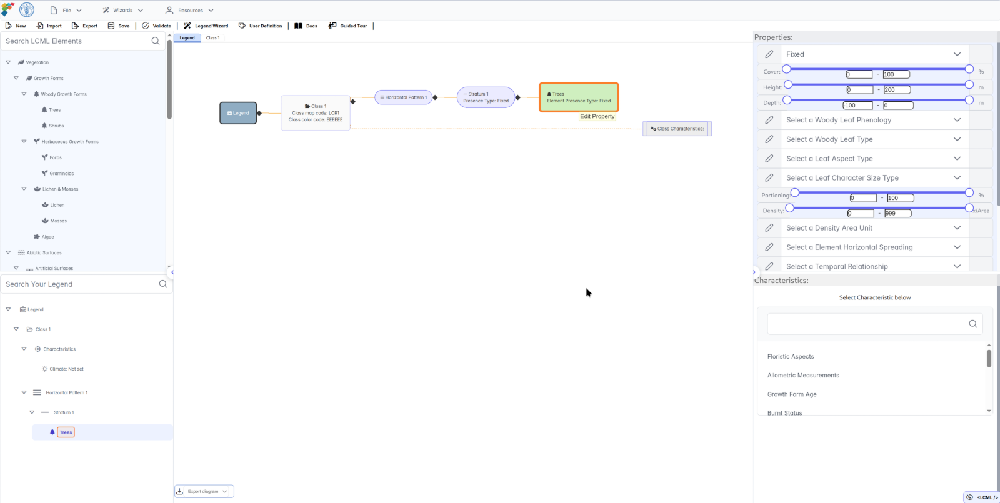
Main Toolbar
The main toolbar contains three dropdown menus.
The menu includes:
- ‘File’: Using this menu a user can create new, import, export and delete a legend. As well as manage saved work and user defined characteristics.
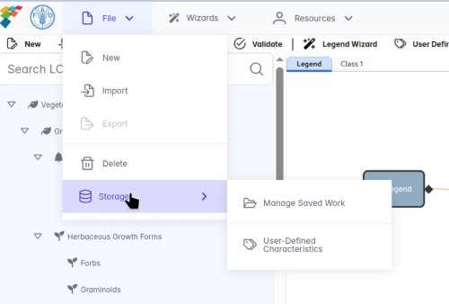
Figure: File Menu - ‘Wizards’: This option enables users to build the legend through a guided and user-friendly interface as well as managing any user-defined characteristics.
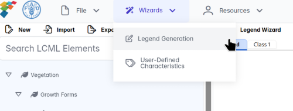
Figure: Wizards Menu - ‘Resources’: This menu provides all the relevant resources related to LChS software as well as other tools and documentation.
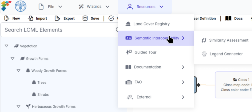
Figure: Resources Menu
Shortcut Toolbar
The shortcut toolbar contains shortcuts to the new (create new legend), import (imports legend), export (exports legend), save (save work progress), validate (validates the created legend), legend wizard (create legends in guided way), uses definitions (manage saved work and defined characteristics), docs (access to online documentation), and guided tour (guide to explain each panel in the software) options.
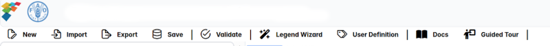
Elements Panel
The elements panel contains a set of independent elements whose combination, according to the LCML rules, will form a land cover class. The elements composing the class are related to the physiognomic and/or structural characterization of the land cover object. Two main elements are present: 1. vegetation (biotic) elements and 2. non-vegetated (abiotic) elements. A user can easily add them into the land cover class by double-clicking, as well as a user can search by typing the name of the element using search bar.
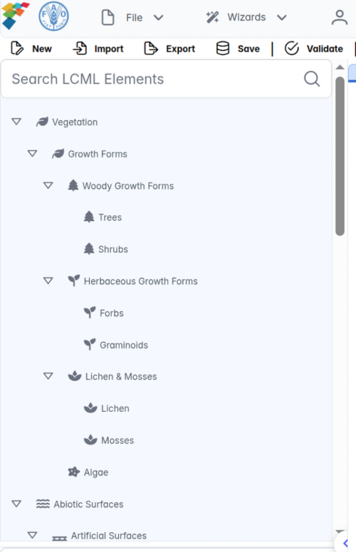
- Vegetation (biotic)
- Woody
- Trees
- Shrubs
- Herbaceous
- Forbs
- Graminoids
- Lichens & Mosses
- Algae
- Woody
- Non-vegetated (abiotic)
- Abiotic surfaces
- Artificial
- Built-up
- Linear surface
- Natural surfaces
- Soils & sand deposits
- Water bodies & associated surfaces
- Abiotic surfaces
Legend Panel
The legend panel lists all the land cover classes in the legend being worked on. A user can also search the land cover class by using search tab in the legend panel.
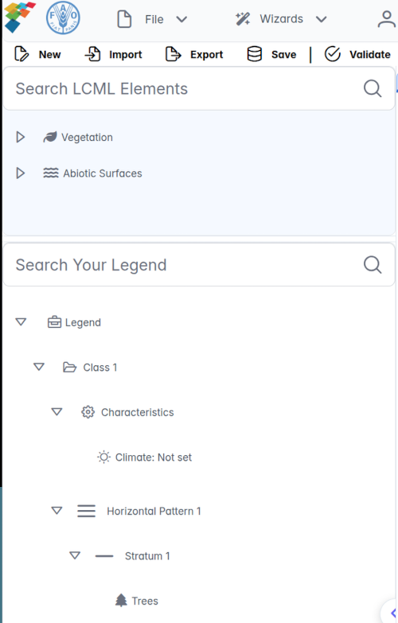
Legend editing and graphic overview pane
The legend editing and graphic overview panel allows users to view and modify legends by simply clicking on the corresponding boxes. Below Figure shows an example of a legend, graphical overview of the legend and its classes and user can export the UML diagram as an image in PNG format by clicking on the export diagram button.
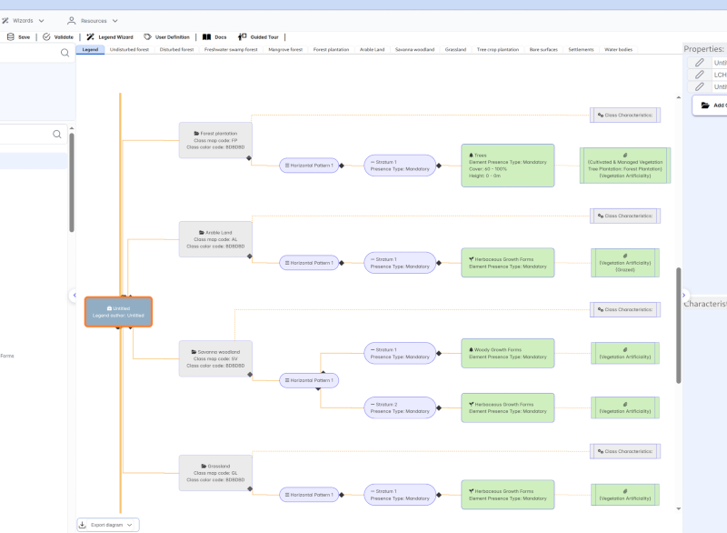
Element properties panel
The legend editing and graphic overview panel is linked with the element properties panel, since properties are a further specialization of the elements with regards to their physiognomic or structural aspect. From the element properties panel, the user can determine the properties of the element after it has been added to the legend tree.
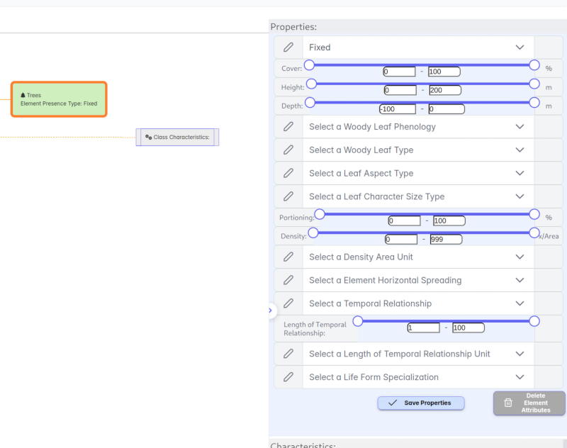
Element characteristics panel
The legend editing and graphic overview panel is linked with the element characteristics panel, since characteristics are a further specialization e.g. climate, floristic aspects, water stress etc. From the element characteristics panel, the user can determine characteristics on addition to the legend tree. The user selects a characteristic group and fills the specific characteristic values in this panel.
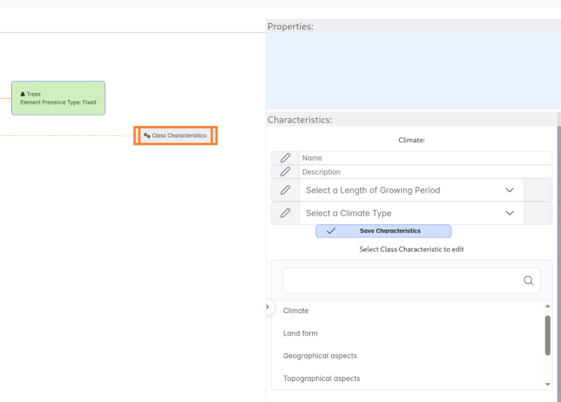
Notifications panel
The notifications panel lists all the LCHS generated notifications including errors whenever a saving function is undertaken.
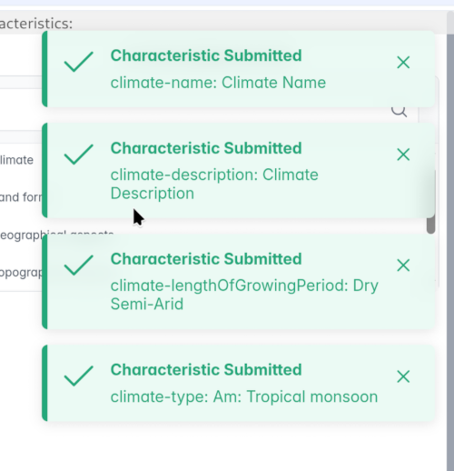